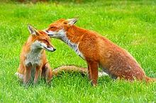
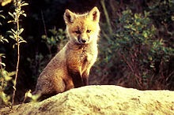
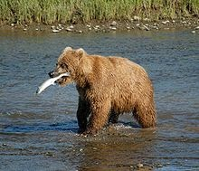

Animali del bosco
LO SCOIATTOLO

Fig.1 - Scoiattolo
Lo scoiattolo è l'animale del bosco più noto e simpatico tra i roditori, appartenente
alla famiglia degli Sciuridi.
Non è aggressivo, ma non ama la compagnia di estranei, da cui fugge e si
nasconde molto bene.
Ha dimensioni medie. La sua lunghezza varia da 35-45 centimetri, di cui 15-20
centimetri di coda.
Pesa all'incirca da 230-450 g.
Ha un corpo agile, slanciato e abile nell'arrampicarsi sugli alberi.
IL CERVO
Fig.2 - IL CERVO

Il cervo è un mammifero che ha 2 corna
(o per meglio dire "palchi" o "trofei"), 4
zampe e può essere lungo 1,90 m e
pesare 250 kg.
Una caratteristica molto curiosa è che il
cervo perde ogni anno i palchi. Essi
ricresceranno nell'identica forma e
posizione dell'anno precedente ma con una ramificazione in più.
Negli individui più deboli i palchi pesano 9-10 kg ma nei più vecchi possono pesare 16-18 kg, i cervi maschi si "vantano" delle loro corna e le utilizzano anche
per attirare le femmine.
Particolare curioso: quando un animale si ferisce la parte inferiore della zampa
destra o sul bordo dello zoccolo, le sue corna crescono molto meno da quel lato.
IL CAMOSCIO
Il corpo del camoscio si è
perfettamente adattato al suo
ambiente.
Le sue zampe sono robuste e
muscolose ed il passo è molto
lungo perché è privo di clavicole
che gli consentono di saltare con
grande facilità sulle pareti
rocciose delle vette. Inoltre la
conformazione particolare degli
arti e la disposizione obliqua
delle scapole gli procura un
effetto molla.
Fig. 3 Il CAMOSCIO

LA VOLPE
Fig. 4/5 LA VOLPE


Le volpi più grandi sono lunghe da 82-90 cm mentre le più piccole misurano fino a
50-90 cm. L'altezza alla spalla è di 35-40 cm. La coda è lunga 35 cm.
Il colore della parte superiore è bruno e arancione e la parte inferiore è biancastra.
La volpe vive nei boschi e sulle montagne, nei prati nelle città e spesso nei paesi. È
diffusa in Europa dove vive fino a 2800 metri d'altezza.
L'ORSO
FIG. 6/7 L'ORSO


L'orso è un grosso animale(65-1000 kg a seconda della specie), dotato di una folta
pelliccia. Ha zampe grosse e una coda piuttosto corta. È diffuso in tutto il mondo,
dalle foreste al polo nord.
L'orso è onnivoro, cioè mangia di tutto dalla frutta alla carne al pesce. Mangia
anche licheni, radici e bacche. È goloso di miele.
Tratto da Wikijunior: gli animali del bosco - Wikibooks, manuali e libri di testo liberi.